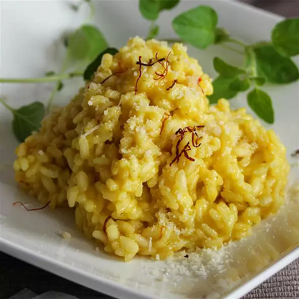

Risotto alla Milanese

Typical Italian risotto as the tradition of my city wants it. Directly from Milano I send you this wonderful recipe!
Ingredients
- 1¾ cups uncooked Arborio rice
- ½ cup unsalted butter, divided
- 1½ quarts beef stock
- 3 tablespoons beef marrow
- 1 onion, thinly sliced
- 1 teaspoon saffron powder
- ¾ cup dry white wine
- salt to taste
- 1½ cups grated Parmesan cheese
Steps
- Melt half of the butter in a medium saucepan over low heat. Simmer the onion and beef marrow in the butter for about 10 minutes. When the onion is soft, remove the onion and marrow from the pan using a slotted spoon, and set aside. (I like to leave the onions in.)
- Saute the rice in the pan over medium heat for 5 to 7 minutes, or until lightly toasted. Stir constantly so the rice will not stick and burn. Stir in one ladle of beef stock, and keep stirring until it is mostly absorbed, ladling and stirring in more of the broth as well as the white wine in the same manner, until the rice is almost al dente. Stir in the saffron, remaining butter, and 3/4 cup of Parmesan cheese. Turn off the heat, cover and let sit for 4 or 5 minutes.
- Serve as a bed for ossibuchi or by itself with as much of the remaining Parmesan cheese sprinkled over as you like.